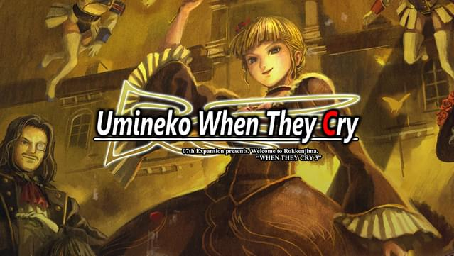
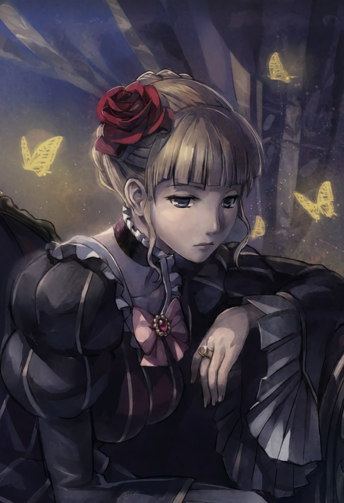
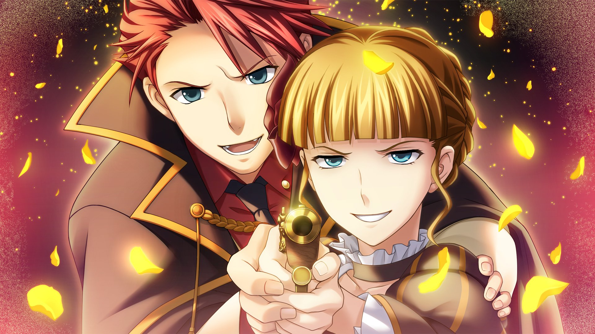
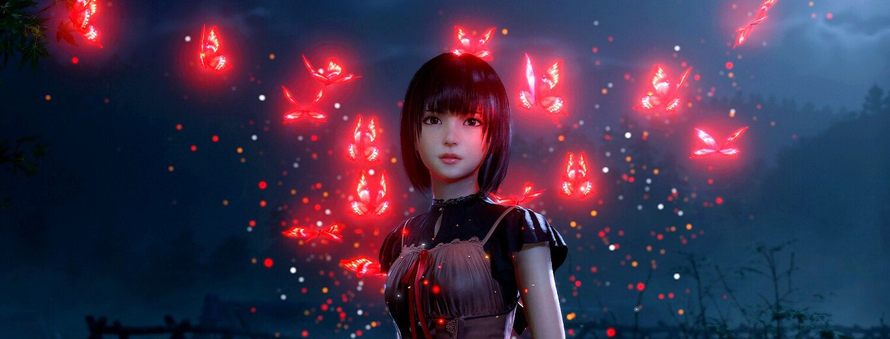
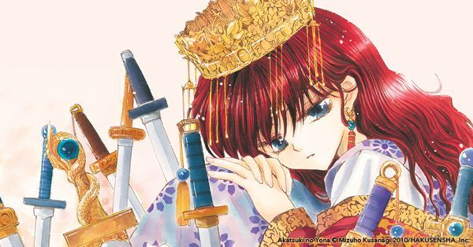
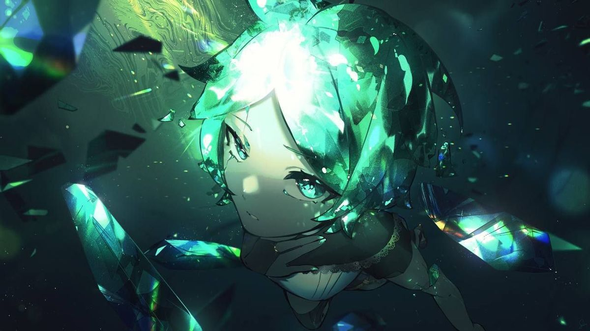
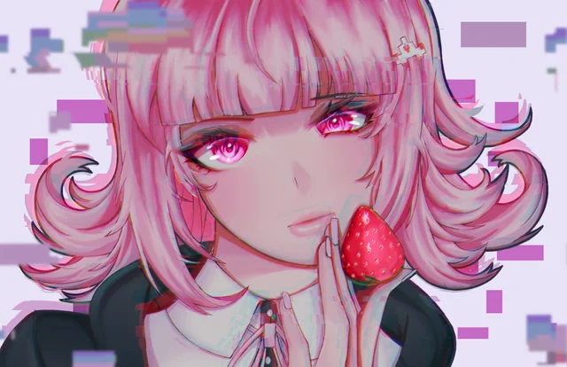
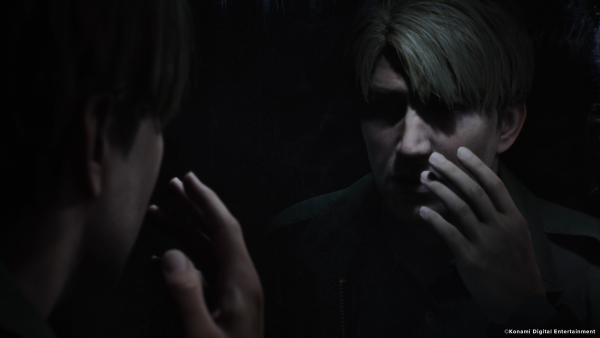
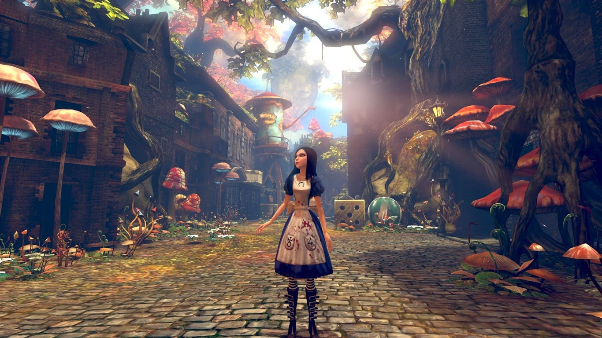
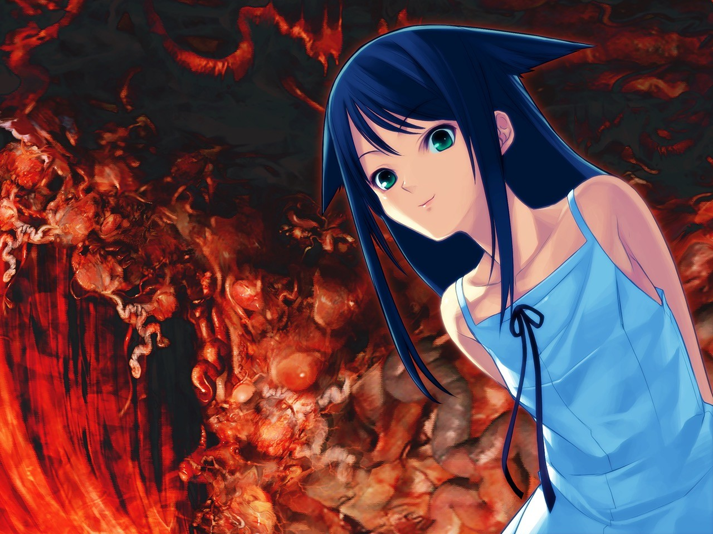

Ce que les jeux
ne disent pas
— ✦ —

Ce qu'Hinako ne peut pas regarder
Un journal qui se réécrit, une poupée qu'on jette à la rivière, un village qui a réécrit son histoire — trois lectures de Silent Hill f comme cartographie de l'identité confisquée.
Constellation Umineko
4 lectures
Il était une fois une île dorée
La légende qu'on raconte aux enfants, avant de leur dire ce qui s'est vraiment passé.

Le mobilier a un cœur
Ceux qu'on prenait pour de simples meubles avaient un cœur — et il battait fort.

Sans amour, cela ne peut être vu
Il existe une vérité qu'on ne peut voir qu'en aimant assez fort pour la mériter.

Umineko comme Comédie
Sept siècles plus tard, Dante revient sous les traits d'une sorcière qui n'a pas pardonné.
Lectures transversales
4 essaisLe monde de Ryukishi07
Un auteur qui refuse à ses personnages le confort d'être seulement des victimes.

Pourquoi l'horreur psychologique est un genre féminin
Ce genre a besoin d'une femme pour avoir peur à sa place — et ça dit beaucoup.

Grandir, ou rendre les armes
On arme les filles à une seule condition : qu'elles ne grandissent jamais en armes.

Nées ailleurs
La guerrière adulte est née hors du rayon des filles. La cage l'y avait précédée.

Corps offerts
Le corps qu'on sacrifie n'est presque jamais celui que l'histoire prétend.
Mémoire & identité
4 lectures
Le palimpseste vivant
Un monde entier bascule, vu depuis la seule main qui sait encore l'écrire.

Le jeu dans le jeu dans le jeu
On pleure une morte qui n'a jamais existé, dans un monde qui n'a jamais eu lieu.

Le brouillard a changé
Ce qu'une équipe a osé ajouter à un brouillard qu'on croyait déjà refermé.

Le pays des merveilles ne protège plus
Le seul refuge d'Alice se retourne, lui aussi, contre elle.
Regard et corruption
4 lectures
L'allumette et le loup
Le narrateur est le tueur. Le noir et blanc, lui, ne mentira jamais.

Ce que voit Fuminori
Le monde devient magnifique exactement au moment où il devrait faire peur.

La règle de la rose
Ce que les enfants font aux enfants — hiérarchies et mémoire brisée.

La poupée qui dit je t'aime
Aya aimait son père. Elle ne savait pas encore ce qu'elle était.